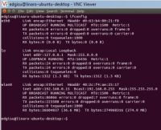
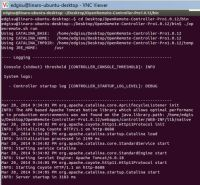
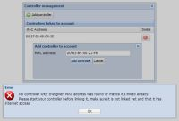
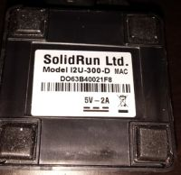

|
This page last changed on Mar 21, 2014 by edgi.
Hi all,
I have not used my OR controller for a whiler and a few weeks ago I received the CuBox-i  , but had not had time to set it up with the controller , but had not had time to set it up with the controller . .
This week I started again but I had some issues:
I'm running Ubuntu 12.10, which is the image that provides SolidRun, the installation was pretty easy and also the installation of the Controller Pro.
The controller starts properly, I guess? (see image 2-0)
The problems I have at this time are:
- The controller (192.168.0.15:8688/controller) does not show me the MAC address (see image 2-1).
- The designer and the controller does not get synchronized (see attached image 2-2).
- My designer can not find the MAC address when I enter the MAC address manually according to the terminal with the "ifconfig" command. (see image 3.0)
(Actually the MAC address of the terminal matches the identification of the product supplied by SolidRun). (see image 1-0 and 5-0)
Does anyone have any idea what is happening?
From my laptop (windows) the controller operates correctly!
See the attached images.
Image 1-0 / My System Info

Image 2-0 / Start controller

Image 2-1 / Controller does not show me the MAC address.
Image 2-2 / Synchronization Error
Image 3-0 / The controller manager can not find the MAC address

*********
Image 4-0 / Synchronization OK (Windowos)
********
Image 5-0 / Info Hardware

|
Can you check if there is some more information in the controller logs ?
Main issue for me is the sync feature not working.
Don't worry about the MAC address for now, it's only required if you want to have autodiscovery of devices such as Z-wave working, not for the sync.

Posted by ebariaux at Mar 24, 2014 10:15
|
|
Hi Eric,
Thanks for your answer and sorry for my late reply but I was not at home and I could not work on this issue.
I change the name of the file where the controller is normally located but this should not affect the functionality of the program itself. In fact, before I change the name of the file the controller did not work either well.
Normally when I start the controller on windows the controller remains active. In Ubuntu the controller reaches only:
INFO: Server startup in 3067 ms
and then stops.
**************
I just reset the controller and this is what I get in the terminal:
edgisu@linaro-ubuntu-desktop:~$ cd Desktop
edgisu@linaro-ubuntu-desktop:~/Desktop$ cd ORC-Pro.1.0.12
bash: cd: ORC-Pro.1.0.12: No such file or directory
edgisu@linaro-ubuntu-desktop:~/Desktop$ dir
ORC-Pro1.0.12 Start-Auto_OpenRemote~ Start-Manual_OpenRemote~
edgisu@linaro-ubuntu-desktop:~/Desktop$ cd ORC-Pro.1.0.12
bash: cd: ORC-Pro.1.0.12: No such file or directory
edgisu@linaro-ubuntu-desktop:~/Desktop$ cd ORC-Pro1.0.12
edgisu@linaro-ubuntu-desktop:~/Desktop/ORC-Pro1.0.12$ cd bin
edgisu@linaro-ubuntu-desktop:~/Desktop/ORC-Pro1.0.12/bin$ ./openremote.sh run
Using CATALINA_BASE: /home/edgisu/Desktop/ORC-Pro1.0.12
Using CATALINA_HOME: /home/edgisu/Desktop/ORC-Pro1.0.12
Using CATALINA_TMPDIR: /home/edgisu/Desktop/ORC-Pro1.0.12/temp
Using JRE_HOME: /usr
---- Logging ----------------------------------------------------------
Console (stdout) threshold CONTROLLER\_CONSOLE\_THRESHOLD: INFO
System logs:
- Controller startup log CONTROLLER\_STARTUP\_LOG\_LEVEL: DEBUG
-----------------------------------------------------------------------
Jan 1, 1970 1:05:31 AM org.apache.catalina.core.AprLifecycleListener init
INFO: The APR based Apache Tomcat Native library which allows optimal performance in production environments was not found on the java.library.path: /home/edgisu/Desktop/ORC-Pro1.0.12/webapps/controller/WEB-INF/lib/native
Jan 1, 1970 1:05:32 AM org.apache.coyote.http11.Http11Protocol init
INFO: Initializing Coyote HTTP/1.1 on http-8688
Jan 1, 1970 1:05:32 AM org.apache.catalina.startup.Catalina load
INFO: Initialization processed in 2356 ms
Jan 1, 1970 1:05:32 AM org.apache.catalina.core.StandardService start
INFO: Starting service Catalina
Jan 1, 1970 1:05:32 AM org.apache.catalina.core.StandardEngine start
INFO: Starting Servlet Engine: Apache Tomcat/6.0.18
Jan 1, 1970 1:05:35 AM org.apache.coyote.http11.Http11Protocol start
INFO: Starting Coyote HTTP/1.1 on http-8688
Jan 1, 1970 1:05:35 AM org.apache.catalina.startup.Catalina start
INFO: Server startup in 3067 ms
Posted by edgi at Mar 26, 2014 21:59
|
|
If you start with openremote.sh start, it will run as a service, so immediately return.
If you start with openremote.sh run, it should keep running and just log to the console.
There is nothing in the above information that indicates any problem.
Can you check under the logs directory and see if there is anything wrong described in any of those files ?
Posted by ebariaux at Mar 27, 2014 12:06
|
|
{kind=link}
{kind=link}
{kind=link}
{kind=link}
{kind=link}
{kind=link}
{kind=link}
{kind=link}
{kind=link}
{kind=link}
{kind=link}
{kind=link}
{kind=link}
{kind=link}
{kind=link}